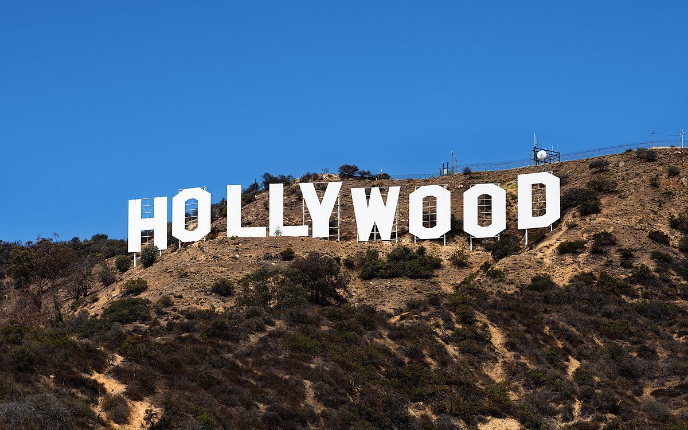

.png)
 0 KM
0 KM


Chicago
La ciudad de Chicago se considera el punto de partida oriental de la Ruta 66, que se extendía al oeste desde allí hasta llegar a la costa oeste en Santa Mónica, California. Esta relación es una parte significativa de la historia de la carretera y contribuyó a la importancia de Chicago como punto de partida para aquellos que buscaban aventurarse hacia el oeste a lo largo de la Ruta 66. La ciudad de Chicago fue un punto de convergencia importante para personas de todo el país que buscaban viajar hacia el oeste a lo largo de la Ruta 66 durante la Gran Depresión y las décadas posteriores. La carretera comenzaba en el centro de Chicago, en Adams Street y Michigan Avenue, y desde allí, los viajeros se dirigían hacia el oeste, recorriendo varios estados y experimentando la diversidad de paisajes y culturas a lo largo del camino. Chicago también desempeñó un papel clave como centro de abastecimiento para aquellos que se aventuraban por la Ruta 66. Los viajeros a menudo se detenían en Chicago para abastecerse de suministros, prepararse para su viaje o simplemente descansar antes de embarcarse


La ciudad de Chicago se considera el punto de partida oriental de la Ruta 66, que se extendía al oeste desde allí hasta llegar a la costa oeste en Santa Mónica, California. Esta relación es una parte significativa de la historia de la carretera y contribuyó a la importancia de Chicago como punto de partida para aquellos que buscaban aventurarse hacia el oeste a lo largo de la Ruta 66. La ciudad de Chicago fue un punto de convergencia importante para personas de todo el país que buscaban viajar hacia el oeste a lo largo de la Ruta 66 durante la Gran Depresión y las décadas posteriores. La carretera comenzaba en el centro de Chicago, en Adams Street y Michigan Avenue, y desde allí, los viajeros se dirigían hacia el oeste, recorriendo varios estados y experimentando la diversidad de paisajes y culturas a lo largo del camino. Chicago también desempeñó un papel clave como centro de abastecimiento para aquellos que se aventuraban por la Ruta 66. Los viajeros a menudo se detenían en Chicago para abastecerse de suministros, prepararse para su viaje o simplemente descansar antes de embarcarse
Springfield
Springfield, Illinois, es una ciudad importante en la historia de la Ruta 66. Springfield es conocida como la "Ciudad de Abraham Lincoln" debido a su estrecha asociación con el presidente de los Estados Unidos, Abraham Lincoln, quien vivió en Springfield antes de su elección como presidente. La Ruta 66 pasaba directamente por Springfield en su recorrido desde Chicago, Illinois, hacia el oeste. Esto significaba que Springfield era una parada importante para los viajeros que recorrían la Ruta 66. La carretera atravesaba el centro de la ciudad, lo que la hacía un punto de referencia icónico en el camino.

Springfield, Illinois, es una ciudad importante en la historia de la Ruta 66. Springfield es conocida como la "Ciudad de Abraham Lincoln" debido a su estrecha asociación con el presidente de los Estados Unidos, Abraham Lincoln, quien vivió en Springfield antes de su elección como presidente. La Ruta 66 pasaba directamente por Springfield en su recorrido desde Chicago, Illinois, hacia el oeste. Esto significaba que Springfield era una parada importante para los viajeros que recorrían la Ruta 66. La carretera atravesaba el centro de la ciudad, lo que la hacía un punto de referencia icónico en el camino.

Oklahoma
Oklahoma cuenta con aproximadamente 400 millas (unos 640 kilómetros) de la Ruta 66, y numerosas ciudades y pueblos en el estado tienen una fuerte conexión con la carretera. Algunos de los puntos destacados de la Ruta 66 en Oklahoma incluyen la ciudad de Tulsa, que alberga el famoso arco de la Ruta 66 y el Museo de Historia de la Ruta 66, así como Oklahoma City, que tiene una vibrante escena de la Ruta 66 y el Capitolio del Estado de Oklahoma, un sitio histórico cerca de la carretera. Oklahoma también presenta paisajes variados, desde las montañas de Ozark hasta las planicies, lo que la convierte en un estado emblemático para los viajeros que exploran la Ruta 66 en busca de su rica historia y cultura.


Oklahoma cuenta con aproximadamente 400 millas (unos 640 kilómetros) de la Ruta 66, y numerosas ciudades y pueblos en el estado tienen una fuerte conexión con la carretera. Algunos de los puntos destacados de la Ruta 66 en Oklahoma incluyen la ciudad de Tulsa, que alberga el famoso arco de la Ruta 66 y el Museo de Historia de la Ruta 66, así como Oklahoma City, que tiene una vibrante escena de la Ruta 66 y el Capitolio del Estado de Oklahoma, un sitio histórico cerca de la carretera. Oklahoma también presenta paisajes variados, desde las montañas de Ozark hasta las planicies, lo que la convierte en un estado emblemático para los viajeros que exploran la Ruta 66 en busca de su rica historia y cultura.
Texas
La Ruta 66 entra a Texas desde el norte en Shamrock y sale hacia el oeste en Glenrio, pasando por ciudades como Amarillo y Vega. En Amarillo, los viajeros pueden visitar el famoso Cadillac Ranch, una instalación artística que presenta automóviles enterrados en el suelo, así como el Museo Histórico de la Ruta 66. Texas ofrece un tramo icónico de la Ruta 66 con amplias carreteras y paisajes desérticos, lo que la convierte en una experiencia única para aquellos que siguen la ruta. La Ruta 66 en Texas es rica en historia y cultura, lo que la hace especialmente atractiva para los entusiastas de la carretera y los viajeros que buscan explorar su legado.


La Ruta 66 entra a Texas desde el norte en Shamrock y sale hacia el oeste en Glenrio, pasando por ciudades como Amarillo y Vega. En Amarillo, los viajeros pueden visitar el famoso Cadillac Ranch, una instalación artística que presenta automóviles enterrados en el suelo, así como el Museo Histórico de la Ruta 66. Texas ofrece un tramo icónico de la Ruta 66 con amplias carreteras y paisajes desérticos, lo que la convierte en una experiencia única para aquellos que siguen la ruta. La Ruta 66 en Texas es rica en historia y cultura, lo que la hace especialmente atractiva para los entusiastas de la carretera y los viajeros que buscan explorar su legado.
Albuquerque
Albuquerque, ubicada en el estado de Nuevo México, desempeña un papel destacado en la historia de la Ruta 66. La carretera pasa directamente a través de la ciudad, y Albuquerque es conocida por su vibrante escena de la Ruta 66 y su arquitectura característica de mediados de siglo. El área de Nob Hill en Albuquerque es especialmente famosa por sus negocios, moteles y restaurantes relacionados con la Ruta 66. Además, el Museo de la Ruta 66 de Albuquerque es un destino popular para los visitantes que desean aprender más sobre la historia de la carretera y su influencia en la cultura estadounidense. Con su rica herencia en la Ruta 66 y su ubicación en el suroeste de Estados Unidos, Albuquerque es un punto clave de interés para aquellos que exploran esta histórica carretera.


Albuquerque, ubicada en el estado de Nuevo México, desempeña un papel destacado en la historia de la Ruta 66. La carretera pasa directamente a través de la ciudad, y Albuquerque es conocida por su vibrante escena de la Ruta 66 y su arquitectura característica de mediados de siglo. El área de Nob Hill en Albuquerque es especialmente famosa por sus negocios, moteles y restaurantes relacionados con la Ruta 66. Además, el Museo de la Ruta 66 de Albuquerque es un destino popular para los visitantes que desean aprender más sobre la historia de la carretera y su influencia en la cultura estadounidense. Con su rica herencia en la Ruta 66 y su ubicación en el suroeste de Estados Unidos, Albuquerque es un punto clave de interés para aquellos que exploran esta histórica carretera.

Flagstaff
Flagstaff, Arizona, es otra ciudad icónica en la historia de la Ruta 66. Situada en el norte de Arizona, la Ruta 66 atraviesa Flagstaff, lo que la convierte en una parada importante para los viajeros que recorren la carretera. La ciudad está rodeada de hermosos paisajes montañosos y bosques, y es conocida por su ambiente pintoresco y su arquitectura de mediados del siglo XX. En Flagstaff, los visitantes pueden explorar el Museo de Historia de la Ruta 66 y admirar el famoso Motel Wigwam Village, que ofrece cabañas en forma de wigwam. Además, Flagstaff es una puerta de entrada al Parque Nacional del Gran Cañón, lo que la convierte en un destino popular para aquellos que viajan a lo largo de la Ruta 66 y desean explorar esta maravilla natural. La ciudad encarna el espíritu de la Ruta 66 y ofrece una experiencia única a los entusiastas de la carretera y los amantes de la aventura.


Flagstaff, Arizona, es otra ciudad icónica en la historia de la Ruta 66. Situada en el norte de Arizona, la Ruta 66 atraviesa Flagstaff, lo que la convierte en una parada importante para los viajeros que recorren la carretera. La ciudad está rodeada de hermosos paisajes montañosos y bosques, y es conocida por su ambiente pintoresco y su arquitectura de mediados del siglo XX. En Flagstaff, los visitantes pueden explorar el Museo de Historia de la Ruta 66 y admirar el famoso Motel Wigwam Village, que ofrece cabañas en forma de wigwam. Además, Flagstaff es una puerta de entrada al Parque Nacional del Gran Cañón, lo que la convierte en un destino popular para aquellos que viajan a lo largo de la Ruta 66 y desean explorar esta maravilla natural. La ciudad encarna el espíritu de la Ruta 66 y ofrece una experiencia única a los entusiastas de la carretera y los amantes de la aventura.
Las Vegas
Las Vegas, Nevada, es una ciudad mundialmente conocida por su vida nocturna, casinos de renombre, espectáculos en vivo, y una ecléctica escena gastronómica. Situada en el famoso Strip, ofrece hoteles de lujo, resorts, y entretenimiento sin fin. Además de los casinos, puedes disfrutar de espectáculos en vivo de alta calidad, experiencias gastronómicas de chef, y visitar atracciones turísticas como la noria High Roller y el Museo Neon. Con un clima desértico, Las Vegas atrae a visitantes durante todo el año y es un destino ideal tanto para la diversión nocturna como para explorar su variedad de atracciones.


Las Vegas, Nevada, es una ciudad mundialmente conocida por su vida nocturna, casinos de renombre, espectáculos en vivo, y una ecléctica escena gastronómica. Situada en el famoso Strip, ofrece hoteles de lujo, resorts, y entretenimiento sin fin. Además de los casinos, puedes disfrutar de espectáculos en vivo de alta calidad, experiencias gastronómicas de chef, y visitar atracciones turísticas como la noria High Roller y el Museo Neon. Con un clima desértico, Las Vegas atrae a visitantes durante todo el año y es un destino ideal tanto para la diversión nocturna como para explorar su variedad de atracciones.

Los Angeles
Los Ángeles es una ciudad icónica ubicada en California, conocida por su diversidad cultural y atracciones turísticas como Hollywood, el Parque Griffith y Disneyland. Tiene un clima mediterráneo y es un importante centro cultural y de entretenimiento. La Ruta 66, también llamada la "Main Street of America", fue una histórica carretera que se extendía desde Chicago hasta Los Ángeles. Fue emblemática por su cultura de carretera, letreros icónicos y lugares históricos a lo largo del camino. A pesar de su declive después de la construcción de autopistas modernas, todavía atrae a entusiastas de la historia de carreteras.
paseo de la fama

ciudad de los angeles
cartel hoolywood
Los Ángeles es una ciudad icónica ubicada en California, conocida por su diversidad cultural y atracciones turísticas como Hollywood, el Parque Griffith y Disneyland. Tiene un clima mediterráneo y es un importante centro cultural y de entretenimiento. La Ruta 66, también llamada la "Main Street of America", fue una histórica carretera que se extendía desde Chicago hasta Los Ángeles. Fue emblemática por su cultura de carretera, letreros icónicos y lugares históricos a lo largo del camino. A pesar de su declive después de la construcción de autopistas modernas, todavía atrae a entusiastas de la historia de carreteras.